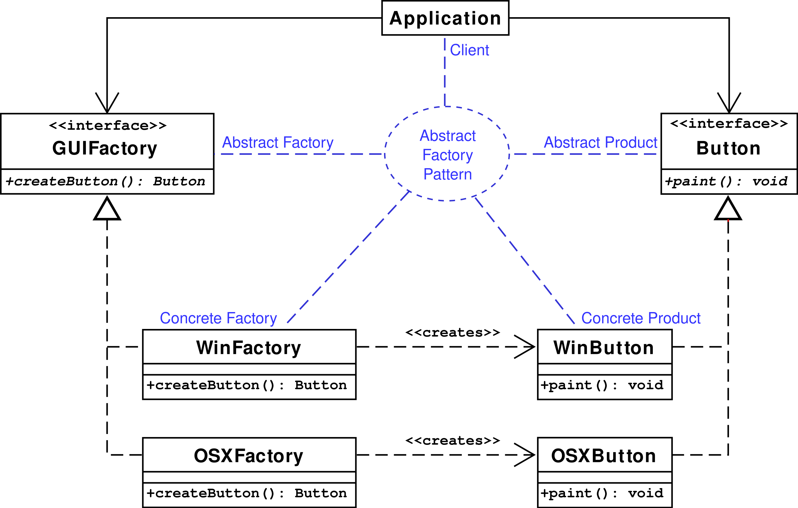

工厂方法指的是把类的构造方法抽象出来，抽象出来的部分被称为工厂方法，而抽象工厂是对工厂的再抽象。工厂是创建对象的地方，其目的是将对象的创建与对象的使用分离。抽象工厂模式的目的，是将若干抽象产品的接口与不同类的具体实现分离开。使用抽象工厂模式，能够在具体工厂变化的时候，不用修改使用工厂的客户端代码，甚至是在运行时（这里指的是Java反射），抽象工厂模式是简单工厂模式和工厂方法模式的整合，是把简单工厂模式的进一步抽象，把工厂分为抽象工厂和具体实现的工厂子类

举个例子来说，比如一个抽象工厂类叫做DocumentCreator（文档创建器），此类提供创建若干种产品的接口，包括createLetter()（创建信件）和createResume()（创建简历）。其中，createLetter()返回一个Letter（信件），createResume()返回一个Resume（简历）。系统中还有一些DocumentCreator的具体实现类，包括FancyDocumentCreator和ModernDocumentCreator。这两个类对DocumentCreator的两个方法分别有不同的实现，用来创建不同的“信件”和“简历”（用FancyDocumentCreator的实例可以创建FancyLetter和FancyResume，用ModernDocumentCreator的实例可以创建ModernLetter和ModernResume）。这些具体的“信件”和“简历”类均继承自抽象类，即Letter和Resume类。客户端需要创建“信件”或“简历”时，先要得到一个合适的DocumentCreator实例，然后调用它的方法。一个工厂中创建的每个对象都是同一个主题的（“fancy”或者“modern”）。客户端程序只需要知道得到的对象是“信件”或者“简历”，而不需要知道具体的主题，因此客户端程序从抽象工厂DocumentCreator中得到了Letter或Resume类的引用，而不是具体类的对象引用
简单工厂模式我们会把所有对象都放在一个工厂去创建，每次有新的对象，我们都会去修改简单工厂的代码，而抽象工厂，就是如果我们有了新的对象要去实现，我们会创建一个新的工厂来创建这个对象(通常会是一组相关对象)，也就是说，我们把工厂这个概念给抽象了，抽象工厂规定了我们能产生哪一类对象，实例工厂用来决定我具体产生这一类对象的哪些具体实现，客户端通过创建不同的实例工厂来持有不同的子类实现，但使用的时候都是面向抽象的
interface Letter {
}
class A implements Letter {
}
class B implements Letter {
}
/**
* 在抽象工厂模式中，通常一个工厂能够创建若干种不同类型的对象
* 这里为了简洁，只创建了一个对象
* 这里往往会是一个产品簇(一组相关对象)，比如说如果是汽车工厂，这里可能有创建发动机，创建轮胎，创建底盘
* 然后根据不同的对象实现，变成不同的工厂
*/
interface Facroty {
Letter createLetter();
}
class LetterFactoryA implements Facroty {
public Letter createLetter() {
return new A();
}
}
class LetterFactoryB implements Facroty {
public Letter createLetter() {
return new B();
}
}
public class FactoryDemo {
//当我们工厂需要产生新的对象的时候，我们仅仅需要向工程中添加对象和它对应的工厂，然后在客户端传递新的参数就可以了
//这个工厂不需要修改任何代码
public Letter createFactory(String factoryType) {
Facroty facroty = (Facroty) Class.forName("factoryType").newInstance();
return facroty.createLetter();
}
}
class Client {
public static void main(String[] args) throws IllegalAccessException, InstantiationException, ClassNotFoundException {
//这里使用了反射，客户端通过创建实例工厂，来获取一组对象的具体实现
FactoryDemo factoryDemo = new FactoryDemo();
Letter letter = factoryDemo.createFactory("A");
}
}
抽象工厂有一个缺点，如果我们需要工厂扩展产生新的类型的对象，我们需要修改抽象工厂的接口，并且在所有具体工厂中实现这个接口